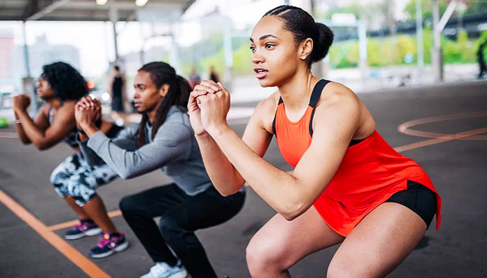
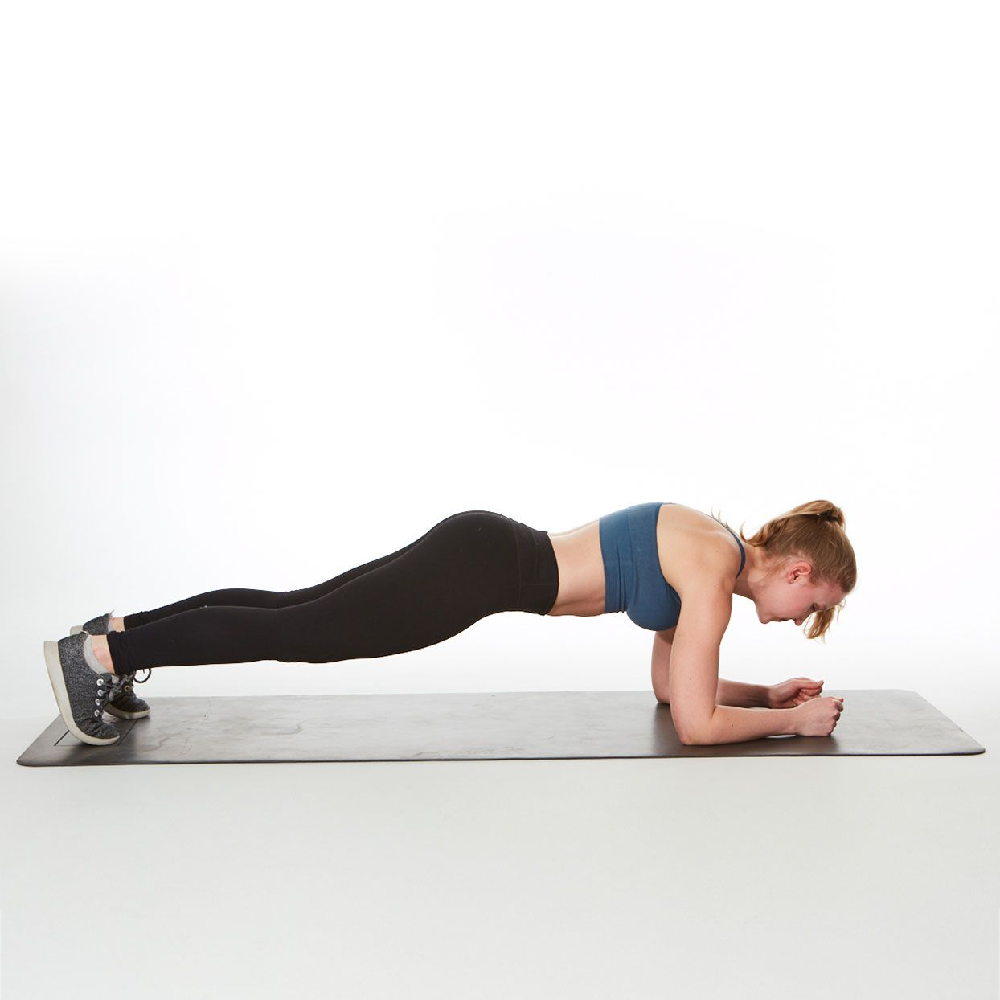

1.Bodyweight Squats
Bodyweight squats are a basic lower-body exercise that builds strength, enhances balance, and stretches—particularly in the thighs, glutes, and hips. Because they only rely on your body weight, they're easy for beginners and great for everyday fitness regimens. Squats simulate common movements such as sitting down and standing up, so they're great for functional fitness. How to perform bodyweight squats: 1.Stand with your feet shoulder-width apart, toes pointed out slightly. 2.Activate your core and maintain an upright chest. 3.Lower yourself by pushing your hips back and bending your knees, as if sitting down in a chair. 4.Maintain heels on the ground and knees in alignment with your toes. 5.Go as low as you feel comfortable, preferably until your thighs are parallel to the ground. 6.Push through your heels to come back to the standing position.
2.Push-Ups

Push-ups are a timeless and very effective bodyweight exercise that develops upper body strength, mainly engaging the chest, shoulders, triceps, and core muscles. Push-ups also enhance posture and core stability, which is why they are a common exercise in most fitness regimens. Push-ups do not need any equipment and can be performed anywhere, which makes them an easy option for everyday exercise. How to do push-ups: 1.Begin in high plank position with your hands at slightly wider-than-shoulder-width distance from each other. 2.Maintain the body in one straight line, head to heels—activate core to prevent slumping hips or a lifted posterior. 3.Lower body by bending at elbows until your chest almost comes in contact with the ground. 4.Push through the palms to press back through elbows and come into starting position again. 5.Do your desired amount of reps.
3.Plank
The plank is a basic yet effective core-bolstering exercise that engages the abs, back, shoulders, and glutes. It's especially good for increasing endurance and enhancing posture, balance, and overall stability. In contrast to crunches or sit-ups, the plank is an isometric exercise since you maintain a position and do not travel through any motion range, which reduces stress on the spine but fully engages the core muscles. How to do a plank: 1.Begin by lying face down, and then push your body up onto your forearms and toes. 2.Put your elbows underneath your shoulders, and hold your arms parallel. 3.Engage your core, glutes, and legs to create a straight line from head to heels—don't let your hips sag or lift them up too high. 4.Maintain this stance while breathing slowly, striving for 20–60 seconds based on your level of fitness.